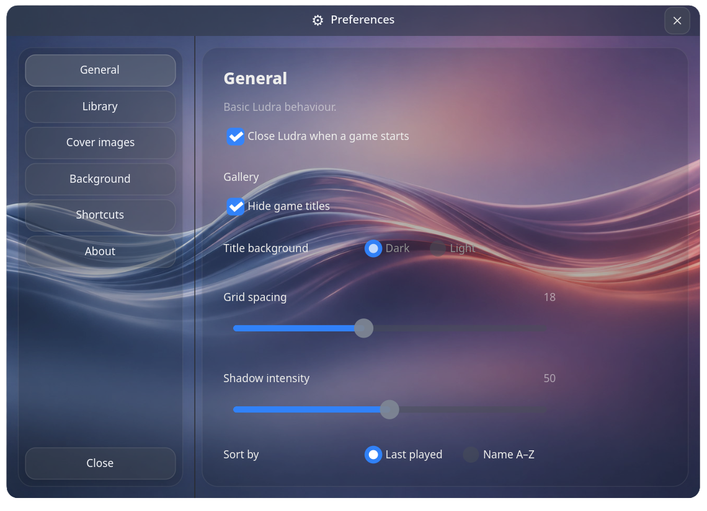
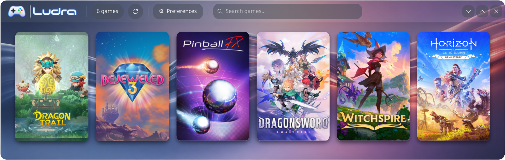
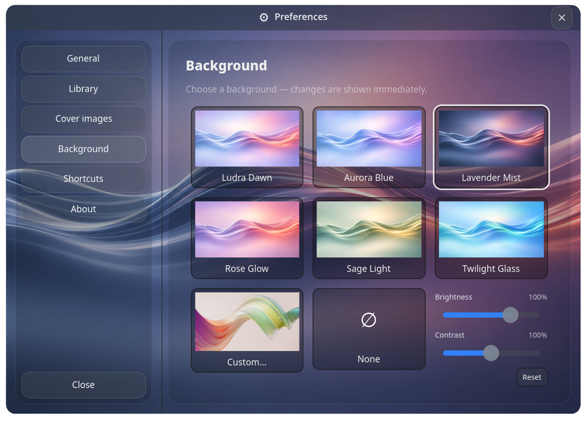
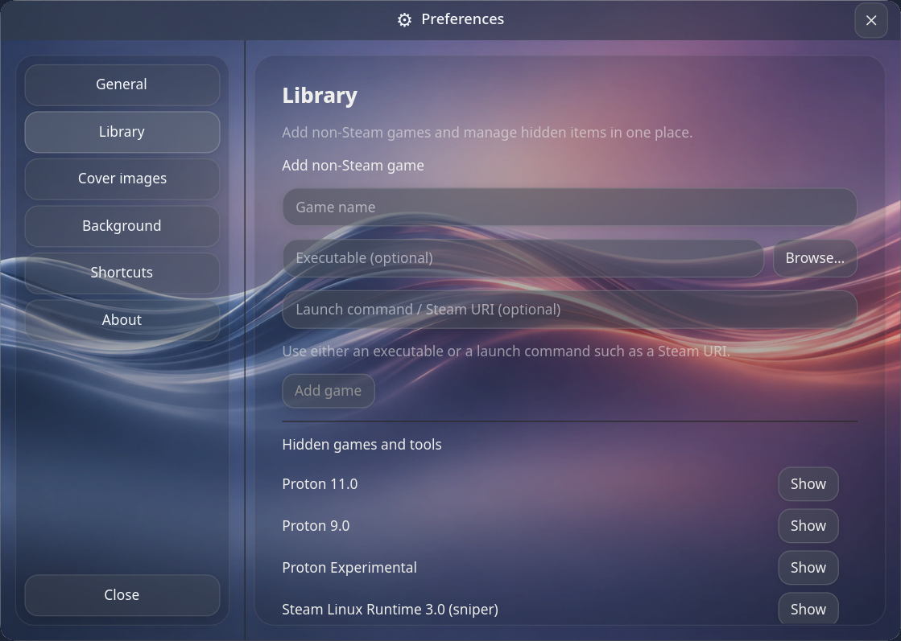

General
Make the gallery your own with spacing, sorting, and appearance controls.
LINUX GAME LAUNCHER
Your Steam library and manually added games, together in one customizable gallery.
Download Ludra View on GitHubLatest stable release: v1.0.0 · Linux Flatpak

A simple, visual game launcher for Linux — made to keep your games in one place.
Shown with genuine Ludra screenshots. Games are not included with the application.
Make the gallery your own with spacing, sorting, and appearance controls.

Choose the atmosphere you like, with built-in themes and your own images.

Add non-Steam games and manage hidden games and tools.
Trying Ludra on a different Linux setup? We'd love to hear how it works for you.
Share feedback or report an issue ↗